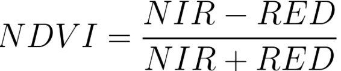

What You'll Learn
- Understand what spectral indices are and why they're useful
- Calculate NDVI manually using band arithmetic (add, subtract, divide)
- Use the
normalizedDifference()shortcut method - Interpret NDVI values to assess vegetation health
- Apply the same technique to calculate other indices like NDWI
Building On Previous Learning
This lab builds on Lab 2 where you learned about satellite image bands and how to select them. Now you'll perform mathematical operations on those bands to extract new information about the Earth's surface.
Why This Matters
Spectral indices transform raw satellite data into meaningful measurements. NDVI specifically is used globally for:
- Agriculture: Monitoring crop health, predicting yields, detecting stress
- Forestry: Assessing forest condition, detecting deforestation
- Climate studies: Tracking global greening and browning trends
- Drought monitoring: Identifying vegetation stress before visual symptoms appear
NDVI is one of the most widely used indices in remote sensing—understanding it opens doors to countless applications.
Before You Start
- Prerequisites: Complete Lab 7 and review the vegetation index readings from this week's module.
- Estimated time: 60 minutes
- Materials: Earth Engine login and a notes document for recording NDVI observations.
Key Terms
- Spectral Index
- A mathematical combination of spectral bands designed to extract specific information (e.g., vegetation, water, built-up areas).
- NDVI (Normalized Difference Vegetation Index)
- An index measuring vegetation "greenness" by comparing near-infrared and red reflectance. Range: -1 to +1.
- Band Arithmetic
- Mathematical operations (add, subtract, multiply, divide) performed on image bands to create new bands or indices.
- NIR (Near-Infrared)
- The portion of the electromagnetic spectrum just beyond visible red light. Healthy vegetation strongly reflects NIR.
- Normalized Difference
- A formula pattern: (A - B) / (A + B). Creates a ratio that ranges from -1 to +1, making values comparable across different conditions.
Introduction: Why Do Plants Reflect NIR?
Before diving into the code, let's understand why NDVI works. Healthy plants have a unique spectral signature:
- Red light: Absorbed by chlorophyll for photosynthesis → LOW reflectance
- Near-infrared: Reflected by cell structure to prevent overheating → HIGH reflectance
Sick or stressed plants have less chlorophyll (absorb less red) and damaged cell structure (reflect less NIR). By comparing these two bands, we can measure plant health—even before leaves visibly change color!

Lab Instructions
-
Part 1 - Set Up the Image
Let's start by loading a Sentinel-2 image. Copy and paste this code into Earth Engine:
///// // Band Arithmetic - NDVI with Sentinel-2 ///// // Define a point of interest (San Francisco area) var sfoPoint = ee.Geometry.Point(-122.3774, 37.6194); // Load and filter Sentinel-2 imagery var sfoImage = ee.ImageCollection('COPERNICUS/S2') .filterBounds(sfoPoint) .filterDate('2020-02-01', '2020-04-01') .first(); // Display as false color composite Map.centerObject(sfoImage, 11); Map.addLayer(sfoImage, { bands: ['B8', 'B4', 'B3'], min: 0, max: 2000 }, 'False Color');Understanding the code:
ee.Geometry.Point()- Creates a location to filter imagery aroundfilterBounds()- Only keeps images that overlap our pointfilterDate()- Limits to a specific time period.first()- Takes the first image from the filtered collection- The false color composite (NIR-Red-Green) makes vegetation appear red
Sentinel-2 Band Reference: B8 = NIR, B4 = Red, B3 = Green, B2 = Blue
-
Part 2 - Calculate NDVI Manually (The Long Way)
First, let's calculate NDVI step-by-step to understand exactly what's happening. This approach uses the basic arithmetic methods:
// Extract the near-infrared and red bands var nir = sfoImage.select('B8'); var red = sfoImage.select('B4'); // Calculate numerator: NIR - Red var numerator = nir.subtract(red); // Calculate denominator: NIR + Red var denominator = nir.add(red); // Calculate NDVI: numerator / denominator var ndvi = numerator.divide(denominator); // Visualize with a vegetation palette var vegPalette = ['red', 'white', 'green']; Map.addLayer(ndvi, { min: -1, max: 1, palette: vegPalette }, 'NDVI (Manual)');Understanding the arithmetic methods:
.select('B8')- Extracts a single band as a new image.subtract(red)- Subtracts red band values from NIR, pixel by pixel.add(red)- Adds red band values to NIR, pixel by pixel.divide(denominator)- Divides pixel by pixel
Expected Result
You should see an image where:
- Green areas = healthy vegetation (NDVI close to 1)
- White areas = bare soil/urban (NDVI near 0)
- Red areas = water (NDVI negative)
Try It
Use the Inspector tool to click on different land cover types. Record the NDVI values you find for: forest, grass, bare ground, water, and urban areas.
-
Part 3 - Calculate NDVI with normalizedDifference (The Easy Way)
Normalized differences are so common that Earth Engine provides a shortcut. The entire calculation can be done in one line:
// Calculate NDVI using the built-in method var ndviND = sfoImage.normalizedDifference(['B8', 'B4']); Map.addLayer(ndviND, { min: -1, max: 1, palette: vegPalette }, 'NDVI (normalizedDifference)');Understanding
normalizedDifference():- Takes an array of two band names:
['First', 'Second'] - Computes: (First - Second) / (First + Second)
- The result is identical to the manual method
Band Order Matters!
- For NDVI: NIR comes first, Red comes second
['B8', 'B4']✅ Correct['B4', 'B8']❌ Wrong (inverts the result!)
- Takes an array of two band names:
-
Part 4 - Calculate NDWI (Water Index)
The same technique works for other indices! The Normalized Difference Water Index (NDWI) measures vegetation water content using NIR and SWIR bands:

NDWI = (NIR - SWIR) / (NIR + SWIR) // Calculate NDWI (Normalized Difference Water Index) var ndwi = sfoImage.normalizedDifference(['B8', 'B11']); var waterPalette = ['brown', 'white', 'blue']; Map.addLayer(ndwi, { min: -0.5, max: 0.5, palette: waterPalette }, 'NDWI');Interpreting NDWI:
- High values (blue): High vegetation water content or water bodies
- Low values (brown): Dry vegetation or bare soil
Note: NDWI is sensitive to both open water AND vegetation moisture stress. It's commonly used for drought monitoring.
Try It
Compare NDVI and NDWI for the same areas. Do high NDVI areas always have high NDWI? What might cause differences?
-
Part 5 - Explore Other Indices
Read these articles about additional spectral indices:
Challenge: Calculate a New Index
Choose a different index from the readings (e.g., NDBI for built-up areas, EVI for enhanced vegetation) and implement it in your code. Think about:
- Which bands do you need?
- What does the index measure?
- What color palette would make sense?
- What min/max values should you use?
NDVI Interpretation Guide
| NDVI Range | Typical Land Cover | Meaning |
|---|---|---|
| -1.0 to -0.1 | Water, snow, clouds | Non-vegetated surfaces |
| -0.1 to 0.1 | Bare soil, rock, sand | No vegetation |
| 0.1 to 0.2 | Sparse vegetation, urban | Very low vegetation |
| 0.2 to 0.4 | Shrubs, grassland, crops | Moderate vegetation |
| 0.4 to 0.6 | Dense crops, light forest | Healthy vegetation |
| 0.6 to 0.9 | Dense forest, peak crops | Very healthy, dense vegetation |
Check Your Understanding
- Why does NDVI use the ratio (NIR-Red)/(NIR+Red) instead of just NIR-Red?
- What would happen to your NDVI image if you swapped the band order in normalizedDifference()?
- A pixel has NIR = 0.8 and Red = 0.1. Calculate its NDVI value manually.
- Why might two healthy forests in different parts of the world have different NDVI values?
Hint for Q1: Think about what happens when comparing images from different seasons or sensors.
Troubleshooting
Solution: Check your min/max values. NDVI ranges from -1 to 1, not 0 to 1 or 0
to 255.
Try min: -1, max: 1.
Solution: You probably have the band order backwards. NIR should be the FIRST
band
in normalizedDifference(['NIR', 'Red']).
Solution: Band names differ between sensors. Check the Data Catalog for correct band names. Sentinel-2 uses B8/B4, Landsat 8 uses B5/B4.
Key Takeaways
- NDVI measures vegetation health using the formula (NIR - Red) / (NIR + Red)
- Healthy vegetation: HIGH NIR reflection, LOW red reflection → NDVI near 1
- Water bodies: LOW NIR reflection → NDVI negative
- Use
.normalizedDifference(['First', 'Second'])for quick calculations - The same pattern works for many indices: NDWI, NDBI, EVI, etc.
- Band order matters! Always put the "positive" band first
Pro Tips
- Add your index as a new band:
image.addBands(ndvi.rename('NDVI')) - Use the 'viridis' or 'RdYlGn' color palettes for publication-quality maps
- Threshold NDVI > 0.3 to create a simple vegetation mask
- Compare NDVI across time to track seasonal changes or vegetation loss
📋 Lab Submission
Subject: Lab 8 - Band Arithmetic NDVI - [Your Name]
Include:
- Shareable link to your GEE script
- Question 1 (10 pts): Screenshot comparing NDVI of vegetation vs. non-vegetation with caption explaining the values
- Question 2 (10 pts): Screenshot of NDWI and interpretation of how it relates to your NDVI observations
- Question 3 (20 pts): Code and screenshot for a new index of your choice, with interpretation
- Question 4 (10 pts): Link to your complete code
Total: 50 points